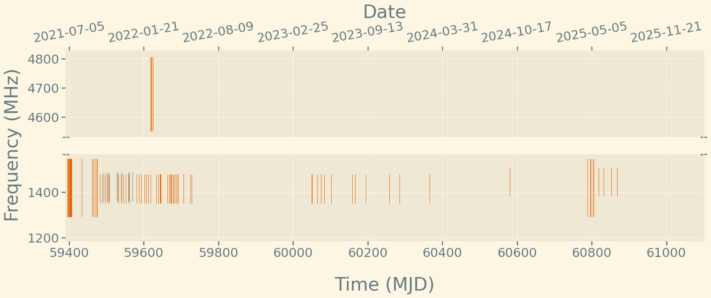

Back to main page
Click on the source name to see the observing plot.
Sources ↓
B0329+54
B0355+54
B0531+21
B0540+23
B0950+08
B1133+16
B1933+16
B2111+46
B2255+58
BSGR
F19
FRB20180901A
FRB20240619D
J1841-0456
R11
R12
R13
R16
R17
R18
R2
R24
R240619D
R3
R34
R4
R47
R48
R54
R6
R67
R74
SGR1841
Previous ←
Next →
Observing plot for B0950+08

Some more information goes here
Download data
Back to main page